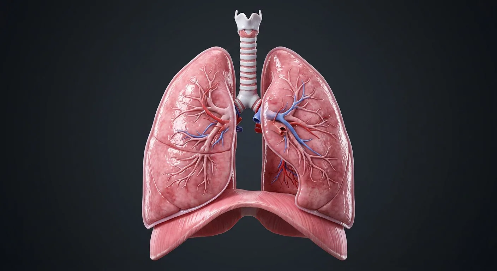

ORGAN → UNDER THE LENS
Alveolar cell lining
Tap to compare the organ region with a tissue-level teaching illustration.
Read about Type I pneumocyte ↓Explore lung lobes, airways and alveoli, then compare Type I and II pneumocytes in a separate microscopic-scale teaching illustration.

BronchiolesMain & lobar bronchiPulmonary veinsRight lung — three lobesHilumFissuresTracheaPulmonary arteriesLeft lung — two lobesCardiac notch & lingulaPleura & pleural cavityDiaphragmAir is conducted from the trachea through progressively dividing bronchi and bronchioles until it reaches the alveoli, where oxygen diffuses into pulmonary capillaries and carbon dioxide diffuses out. The right lung has three lobes separated by oblique and horizontal fissures; the left has two, with a cardiac notch and lingula to accommodate the heart. Each lung is wrapped in visceral pleura, opposed by parietal pleura across a thin fluid-filled cavity whose surface tension keeps the lung expanded.
These are educational cutaways, not literal magnifications of an organ pixel or laboratory slides. A ring marks the approximate tissue region; part-specific lines appear only where identifiable.
Tap to compare the organ region with a tissue-level teaching illustration.
Read about Type I pneumocyte ↓Tap to compare the organ region with a tissue-level teaching illustration.
Read about Alveoli & capillary bed ↓These 13 structures describe anatomy related to the chapter’s regional illustration. Each entry separates location, function and a clinical point.
A 10–12 cm tube held open by 16–20 C-shaped hyaline cartilage rings, open posteriorly where the trachealis muscle lies. Lined by ciliated pseudostratified columnar epithelium with goblet cells.
What it doesConducts, warms, humidifies and filters inspired air.
Clinical connectionForeign bodies more often enter the right main bronchus because it is wider, shorter and more vertical.
The trachea divides at the carina (T4/T5) into right and left main bronchi, which divide into lobar then segmental bronchi. Cartilage plates replace rings as the airways narrow.
What it doesDistribute air to each lobe and bronchopulmonary segment.
Clinical connectionEach segmental bronchus supplies a bronchopulmonary segment that can be surgically removed on its own.
Airways under 1 mm with no cartilage and relatively more smooth muscle, ending in terminal then respiratory bronchioles.
What it doesRegulate airflow resistance and deliver air to the alveolar ducts.
Clinical connectionSmooth-muscle spasm of the bronchioles is the main problem in asthma; smooth muscle is also the target of salbutamol.
Superior, middle and inferior lobes separated by the oblique and horizontal fissures. Shorter than the left because the liver sits below, but wider and heavier.
What it doesGas exchange across ~150 million alveoli.
Clinical connectionThe right middle lobe is prone to collapse (middle-lobe syndrome) because its bronchus is narrow and surrounded by nodes.
Superior and inferior lobes separated by the oblique fissure only. Narrower than the right because the heart bulges to the left.
What it doesGas exchange; the lingula of the superior lobe is the equivalent of the right middle lobe.
Clinical connectionA left upper-lobe mass can compress the recurrent laryngeal nerve, causing hoarseness.
Deep invaginations of visceral pleura. The oblique fissure runs in both lungs (T4 posteriorly to the 6th rib anteriorly); the horizontal fissure is right-sided only.
What it doesAllow the lobes to slide against each other and define surgical planes.
Clinical connectionFluid collects in the fissures on a chest radiograph as a "phantom tumour" in heart failure.
A concave impression on the anterior border of the left lung that cradles the heart; the tongue-like projection below it is the lingula.
What it doesMakes room for the heart and left ventricular apex.
Clinical connectionThe bare area of pericardium behind this notch allows pericardiocentesis without crossing the pleura.
The wedge-shaped entry point on the mediastinal surface: main bronchus, pulmonary artery, pulmonary veins, bronchial vessels, lymphatics and nerves.
What it doesThe lung's root — everything enters and leaves here.
Clinical connectionHilar lymph node enlargement is a classic sign of sarcoidosis and tuberculosis.
Visceral pleura covers the lung; parietal pleura lines the wall. Between them is a potential space with a film of serous fluid.
What it doesSurface tension couples the lung to the chest wall so it expands with it, and the fluid lets the layers glide.
Clinical connectionAir entering the cavity collapses the lung — a pneumothorax. Fluid gives a pleural effusion with stony dullness on percussion.
Carry deoxygenated blood from the right ventricle, branching alongside the bronchi into each segment.
What it doesBring the whole cardiac output to the alveolar capillaries.
Clinical connectionHypoxic pulmonary vasoconstriction shunts blood away from poorly ventilated regions — reversed globally in COPD, causing pulmonary hypertension.
Four veins that collect oxygenated blood from the capillary plexus and drain into the left atrium.
What it doesReturn oxygenated blood to the systemic pump.
Clinical connectionThey run in the interlobular septa — the opposite position to the pulmonary arteries.
A dome-shaped musculotendinous sheet separating thorax from abdomen, with crura arising from the lumbar vertebrae and openings for the aorta (T12), oesophagus (T10) and IVC (T8).
What it doesThe main muscle of inspiration — contraction flattens the dome and enlarges the thorax.
Clinical connectionSupplied by the phrenic nerve (C3–C5): "C3, 4, 5 keeps the diaphragm alive". A high spinal cord injury above C3 stops spontaneous breathing.
Thin-walled sacs of type I pneumocytes wrapped in capillaries; type II pneumocytes secrete surfactant and alveolar macrophages patrol the surface. Together they present ~70 m² of membrane only 0.5 µm thick.
What it doesDiffusion of O₂ into blood and CO₂ out of it.
Clinical connectionSurfactant deficiency in premature infants causes respiratory distress syndrome. Emphysema destroys the walls, reducing surface area.
These 8 additional entries give anatomical context. They are deliberately not assigned a photographic pin on the regional image.
Related deep chapters: Pulmonary acinus · gas-exchange barrier.
Final nonalveolated conducting airway before respiratory zone.
What it doesDelivers air to downstream acinus.
Clinical connectionContains no cartilage plates or submucosal glands.
First airway segment with alveoli interrupting its wall.
What it doesCombines air conduction and some gas exchange.
Clinical connectionMarks proximal boundary of acinus.
Distal passage whose walls are largely alveolar openings.
What it doesDistributes air to multiple alveolar sacs.
Clinical connectionMore extensively alveolated than respiratory bronchiole.
Common terminal chamber opening into a cluster of alveoli.
What it doesShares airflow among terminal alveoli.
Clinical connectionNot synonymous with a single alveolus.
Tiny airspace lined by specialized epithelium and surrounded by capillaries.
What it doesProvides extensive diffusion surface.
Clinical connectionDestruction reduces gas-exchange area.
Very thin squamous alveolar epithelial cell covering most alveolar surface.
What it doesMinimizes gas diffusion distance.
Clinical connectionDamage can impair barrier integrity.
Cuboidal cell with lamellar bodies, commonly at alveolar corners.
What it doesSecretes surfactant and contributes to epithelial renewal.
Clinical connectionImmature surfactant production contributes to neonatal respiratory distress.
Resident/mobile phagocyte in alveolar airspaces.
What it doesRemoves particulates and participates in host defense.
Clinical connectionInflammation can recruit further macrophages.
Short answers grounded in the structures described above. Use the illustrated guide for anatomical context.
The right lung usually has superior, middle and inferior lobes; the left has superior and inferior lobes with a cardiac notch. Fissures divide the lobes, though normal anatomy can vary.
Air passes from progressively smaller bronchi to bronchioles, then through the respiratory zone toward alveoli. Exchange of oxygen and carbon dioxide occurs across the very thin alveolar–capillary barrier.
A Type I pneumocyte is a very thin squamous cell forming much of the alveolar gas-exchange surface. It can be recognized on the separate microscopic-scale teaching illustration, not on the whole-lung image.
A Type II pneumocyte is a plumper alveolar cell that secretes pulmonary surfactant, which helps reduce surface tension. It also contributes to maintenance and repair of the alveolar lining.
No. It is a digital educational illustration that shows the thin Type I lining next to a plumper Type II cell. It is not histology or a literal magnification of the macroscopic lung image.
Follow these connected structures and body systems in the illustrated atlas.
 Upper airwayThe conducting corridor: nose conditions the air, pharynx crosses food and air, larynx turns air into voice and guards the lungs, trachea delivers.↗
Upper airwayThe conducting corridor: nose conditions the air, pharynx crosses food and air, larynx turns air into voice and guards the lungs, trachea delivers.↗ Pulmonary acinus · gas-exchange barrierFrom terminal bronchiole to alveolar sac, type I/II pneumocytes, macrophages and the air–blood barrier.↗
Pulmonary acinus · gas-exchange barrierFrom terminal bronchiole to alveolar sac, type I/II pneumocytes, macrophages and the air–blood barrier.↗ HeartA four-chambered muscular pump with four valves and its own electrical conduction system.↗
HeartA four-chambered muscular pump with four valves and its own electrical conduction system.↗ BrainMidsagittal section: cerebrum, diencephalon, brainstem and cerebellum around the ventricular system.↗
BrainMidsagittal section: cerebrum, diencephalon, brainstem and cerebellum around the ventricular system.↗General anatomy references and related source chapters for continued study. These links do not make the digital illustrations clinical images or certify every anatomical variant.
This educational page is not medical advice and has not undergone formal clinical peer review. Spotted an error? Contact the editor.
Open the realistic interactive plate, label lines, focus view and self-test.